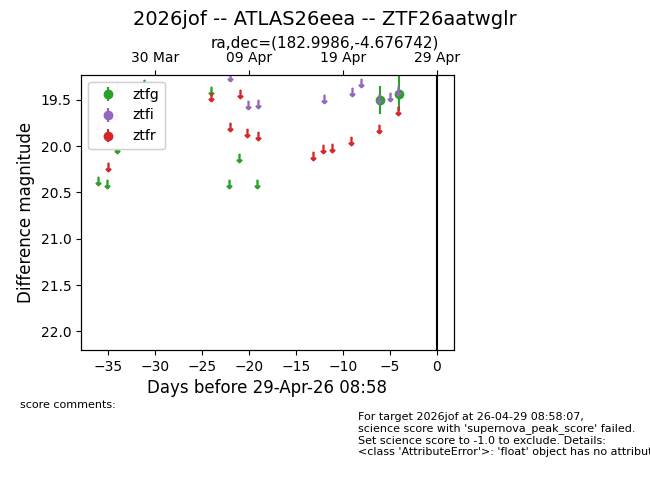
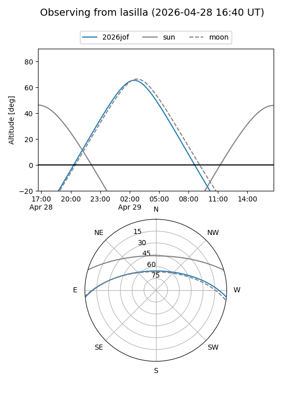
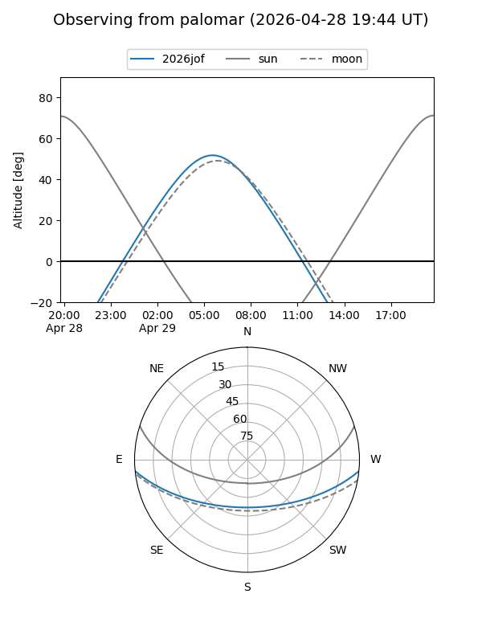

2026jof
Target 2026jof at 2026-04-29 09:01
Aliases and brokers:
FINK: link
Lasair: link
ALeRCE: link
TNS: link
YSE: link
alt names
ZTF26aatwglr (ztf,fink_ztf)
2026jof (tns,yse)
ATLAS26eea (atlas)
Coordinates:
equatorial (ra, dec) = 182.9986,-4.67674
equatorial (HMS+DMS) = 12:11:59.66,-04:40:36.27
galactic (l, b) = (284.7702,+56.79769)
Flags:
Photometry:
last ztfg=19.43
2 ztfg detections
Lightcurve

Visibility


Additional plots